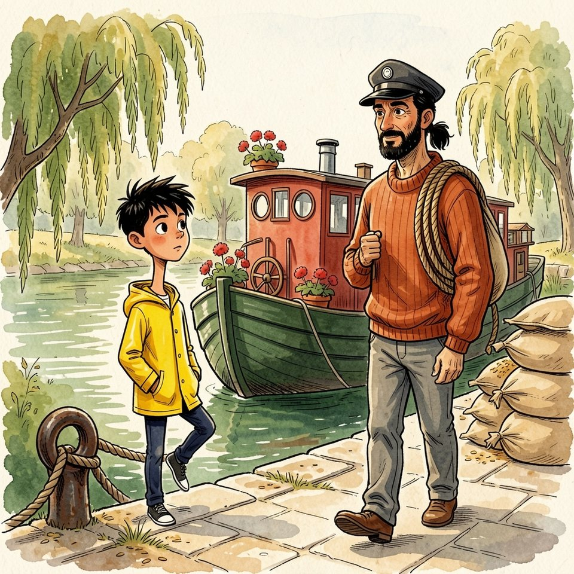

Titistoire › Les Comètes (6-8 ans)
Ça m'est égal
Une année à Virevent, l'histoire du mois de août : Jeanne, Gaspard, Suzie et Marin.

▶ Écouter et regarder l'histoire
Gratuit, sans inscription : la voix lit, le texte suit mot à mot, les images tournent comme dans un album.
Le texte de l'histoire
En août, Virevent sentait la paille chaude. Les charrettes de la moisson descendaient au quai des Saules, et les sacs de blé s'entassaient devant L'Hirondelle, ventrus comme des chats endormis.
Un matin, le facteur apporta la nouvelle : l'écluse d'aval était réparée. On l'attendait depuis septembre. Il avait fallu onze mois, ce qui, pour Virevent, s'appelait se dépêcher.
Le père de Marin lut la lettre, la replia, chargea un sac sur son épaule. Il parlait peu : une phrase par jour, les bons jours. Celle-là tomba entre deux sacs. « On part à la fin du mois. »
Marin aurait pu demander pour où, et pour combien de temps. Il ne demandait jamais rien. Quand on demandait, on vous répondait ; et cette réponse-là, dix-sept villes la lui avaient déjà donnée.
Il cala un pied derrière son mollet. « Ça m'est égal », annonça-t-il à la rivière. La rivière, qui s'en allait de toute façon, ne fit aucun commentaire.
Le vélo bleu vivait à terre depuis l'automne, appuyé contre un saule. Ce soir-là, Marin le hissa sur le toit de la péniche, entre les géraniums et la cheminée de fer-blanc.
La vieille corde l'y attendait, lovée comme un chat. Il fit trois nœuds, serrés à s'en blanchir les doigts. Un vélo sur un toit, cela se voyait de loin. Du pont Bossu, par exemple.
Gaspard arriva en courant. Il s'arrêta au bord du quai et leva le nez. « Trois nœuds. » « Trois. » « Il y a un chemin, ici. » « Le chemin ne monte pas à bord. »
« Vous partez ? Pour où ? Pour combien de temps ? » Gaspard posait les questions que Marin n'avait pas posées. C'était insupportable. « Un bateau, ça part », répondit Marin. « C'est fait pour. » Et il redescendit dans la cabine, sans un au revoir.
Le lendemain, il se mit à ranger. Un bateau bien rangé partait sans bruit ; il l'avait vérifié dix-sept fois. Il mit dans ses poches tout ce qui n'était pas à lui, et passa la planche de l'île.
Il se cogna au toit de la cabane, comme toujours. « Elle est petite, cette cabane. » « Elle a toujours été petite », objecta Gaspard. « C'est toi qui dépasses. »
Marin posa sur la caisse la boussole prêtée au printemps. « Je ne te l'ai pas réclamée », protesta Gaspard. « Elle montre le nord. Moi, je descends. » À Suzie, il tendit l'écharpe qu'elle lui avait nouée au cou un jour de neige.
On était en plein mois d'août. Suzie prit la laine sans répondre « oui, oui », sans rien répondre du tout. Elle le regarda seulement, un peu trop longtemps ; et Marin trouva beaucoup d'intérêt au bout de ses souliers.
À Jeanne, il ne devait ni boussole ni écharpe. Il lui devait trois histoires, qu'elle lui avait prêtées en précisant bien que c'était un prêt. Il la trouva au lavoir, où Titou poussait sa charrette.
« Je te rends tes histoires. » Et Marin récita, sur une jambe : l'arrière-grand-père corsaire, la carpe à moustaches, la comète qui avait oublié sa queue au beffroi. Dans sa bouche, elles pendaient comme du linge mouillé.
« Voilà. Le compte y est. » « On ne rend pas une histoire ! » éclata Jeanne. « Ce n'est pas un parapluie ! Une histoire, quand on l'a entendue, on l'a ! C'est archi-définitif ! » « … tif ! » approuva Titou.
« Là où je vais, personne ne les croirait. » « Personne ne les croit ici non plus ! Ça n'a jamais rien empêché ! » Marin repartit, les poches vides. Il s'attendait à se sentir léger. Il se sentit creux.
Ensuite, il se fâcha. Il trouva le manège lent, les berlingots trop sucrés. C'était un calcul : on quittait plus commodément des gens fâchés. Ils ne venaient pas agiter la main sur le quai.
Le mardi, il surprit Jeanne accroupie devant l'anneau du quai, les deux mains sur l'amarre. « Je regardais seulement si elle tenait ! » Ses joues enflaient. « Juré-craché-mouillé ! »
« Si tu la caches, le bateau s'en va tout seul », observa Gaspard. « Alors on cache le bateau ! » « Il mesure trente mètres. » « Alors on cache l'écluse ! »
« Laissez mon amarre », coupa Marin. « Et toi, range ton carnet. Objets rendus, jours restants : tu comptes tout. Compte donc ça : dans six jours, tu auras un ami de moins à compter. »
Gaspard devint gris sous ses lunettes. Il referma son carnet et s'en alla sans se retourner, Jeanne sur ses talons. « Ça m'est égal ! » lança Marin vers leurs dos. Il le cria assez fort pour l'entendre lui-même. Cela ne suffit pas.
Le jeudi, il voulut défaire le petit nœud de ficelle qu'il avait laissé, au printemps, à la poignée de Madame Bogue. Quatre mois de pluie l'avaient serré. Il ne vint pas.
Le dernier soir, Marin s'assit sur le toit, à côté du vélo. C'était la nuit des étoiles filantes ; à Virevent, elles tombaient fin août, avec un peu de retard sur le reste du ciel.
Suzie parut sur le quai, toute seule. Elle ne demanda rien, elle non plus. Elle leva seulement le doigt vers l'île. Là-bas, dans le grand saule, un point rouge venait de s'allumer. La lanterne. Réunion.
« Ça m'est… » commença Marin. À Suzie, les deux derniers mots n'étaient jamais sortis. Ils ne sortirent pas davantage. Elle attendit, le temps de les entendre ne pas venir, puis repartit le long des saules.
Il resta. Une étoile fila au-dessus du beffroi. Il ne fit pas de vœu : un vœu, c'était encore demander. Le point rouge brûla longtemps. Puis il se mit à trembler dans ses yeux, et Marin rentra.
Dans la timonerie, la lampe à huile faisait une flaque jaune. Son père étudiait la carte. En bas, sa mère chantait une chanson de départ, qui ressemblait beaucoup à ses chansons d'arrivée.
Au chambranle, dix-sept encoches, une par ville. On taillait la suivante la veille de larguer l'amarre, avec le vieux clou pendu là exprès. Marin le décrocha. Cette ville-ci aurait mérité une encoche plus profonde que les autres.
« Qu'est-ce que tu fabriques ? » Marin sursauta. Son père avait déjà parlé, ce jour-là. C'était donc une phrase en trop. « L'encoche. » « Quelle encoche ? » Et de trois. Jamais il ne l'avait connu si bavard.
Le marinier se leva. Il regarda le clou, puis, par la porte ouverte, la couchette de son fils : l'étagère vide, la patère sans écharpe. « Pourquoi as-tu rendu toutes tes affaires ? »
« Parce qu'on part. Quand on part, on rend. » Son père le dévisagea comme un chenal qu'il n'aurait pas reconnu. Puis il fit une chose rare. Il parla longtemps.
« On descend le blé jusqu'à la mer. Trois semaines. » Son doigt descendit le trait bleu de la carte, tout en bas, puis le remonta jusqu'à la boucle de Virevent.
« J'ai payé l'anneau du quai pour l'année. Le maître te garde ton crochet. On sera rentrés pour la cloche. Je te l'avais annoncé en avril : un nœud d'amarre, ça dit au bateau où revenir. »
« Je croyais que c'était un proverbe. » « C'était un renseignement. » Marin ne sentait plus le clou dans sa main. Tout était là depuis le début, derrière une seule question. Il ne l'avait pas posée. Il avait tout défait à la place.
Il raccrocha le clou. Puis il posa la première question de sa vie, ou peu s'en fallait. « Je peux y aller ? » « Où ? » « Dire quelque chose. » Son père ouvrit la porte de la timonerie. « Cours. »
Il courut. Le quai, les saules, les réverbères de Madame Bogue. Son ciré claquait derrière lui. Au-dessus des toits, les étoiles se décrochaient une à une, sans se presser.
La planche de l'île plia sous son élan. Dans le saule, la lanterne rouge brûlait toujours. Mais la cabane était vide. Sur la caisse, une boussole. Au clou de la porte, une écharpe d'hiver. Personne n'avait rien repris.
Marin regarda la cabane, son toit en barque, sa fenêtre ronde. Elle n'était pas petite. Elle avait exactement la taille qu'il fallait pour quatre, à condition de baisser la tête.
Il décrocha la lanterne. Où montait-on, à Virevent, une nuit d'étoiles ? Il reprit sa course, la flamme au poing, par le pont Bossu, vers la butte aux Alouettes.
Il entendit la butte avant de la voir. « Là ! Encore une ! » C'était Jeanne. « Une comète ? Où ça ? » C'était le père Anselme. « Une étoile filante ! » « Du poêle ? En plein mois d'août ? »
Ils étaient sous le tilleul, le nez en l'air : Jeanne, Gaspard et Suzie, serrés sur le banc. Le banc était plein. Marin s'arrêta au bord de l'ombre, la lanterne au bout du bras.
Trois têtes se tournèrent. Personne ne se leva. Gaspard remonta ses lunettes, et ne sortit pas son carnet. Marin avait couru toute la ville avec une phrase dans la bouche, et voilà qu'elle ne voulait plus sortir.
Son pied gauche chercha son mollet droit. Il le reposa dans l'herbe, comme sur un pont par gros temps. « Ça ne m'est pas égal. » Ce n'était pas fort. Mais sur la butte, on n'entendit plus rien d'autre.
« Rien ne m'est égal. Ni la cabane, ni le manège, ni vous. » « Du veau ? » s'informa le père Anselme. « Non merci, j'ai déjà dîné. » Et Jeanne éclata de rire, parce qu'il fallait bien que quelqu'un commence.
Marin expliqua. Cela tint en peu de mots : le blé, la mer, trois semaines, l'anneau payé pour l'année. « Et tu ne le savais pas ? » s'étrangla Jeanne. « Je n'avais pas demandé. »
Gaspard gardait les bras croisés. « Un ami de moins à compter. C'est ce que tu m'as lancé. » « Oui. » « Ce n'était pas juste. » « Non. » Marin chercha comment réparer cela. Il ne connaissait pas ce nœud-là.
Alors il demanda. C'était la deuxième fois de la soirée ; il commençait à prendre le pli. « La boussole. Tu me la reprêtes ? » Gaspard réfléchit longuement, pour le principe. « À la rentrée. Tu viendras la chercher. »
« Et moi, je ne reprends rien ! » prévint Jeanne. « Tes trois histoires, tu me les dois toujours. Avec les intérêts : au retour, je veux la mer. La vraie. Sans arrondir. » « Promis. »
Suzie, sans un mot, se poussa. Cela fit une place. Marin s'assit. Ils regardèrent tomber le ciel jusqu'à la dernière étoile ; et le bord de la nuit devint gris, puis rose.
À l'aube, Madame Bogue éteignait ses réverbères quand L'Hirondelle largua son amarre et glissa, lourde de blé, jusqu'à l'écluse. La mère de Gaspard attendait à la manivelle ; Gaspard, au bord de la pierre, les yeux tout petits d'avoir veillé.
Les portes se refermèrent sur la péniche. Sur le toit, Marin s'agenouilla près du vélo bleu. Trois nœuds. Il défit le premier. La manivelle grinçait, l'eau baissait, et le toit descendait avec elle, tout doucement.
Il défit le deuxième. Le troisième résista : c'était le mieux serré. Puis il céda. Marin souleva le vélo à bout de bras, tant que le quai restait à sa portée. « Tu me le gardes ? »
Gaspard l'attrapa par le guidon et par la selle. « Premièrement, je le rentre s'il pleut. Deuxièmement, je graisse la chaîne. » « Et troisièmement ? » « Troisièmement, je tiens. »
Les portes d'aval s'ouvrirent. La rivière emporta la péniche verte, son toit nu, sa corde restée seule. Au tournant, Marin entendit la sonnette. Un coup, puis deux, puis toute une volée, qui courut sur l'eau derrière lui.
Il se tenait debout sur le toit, sur ses deux pieds. Il leva le bras, très haut, et ne le baissa qu'après le dernier saule. Devant, la rivière descendait vers la mer. Derrière, quelqu'un tenait.